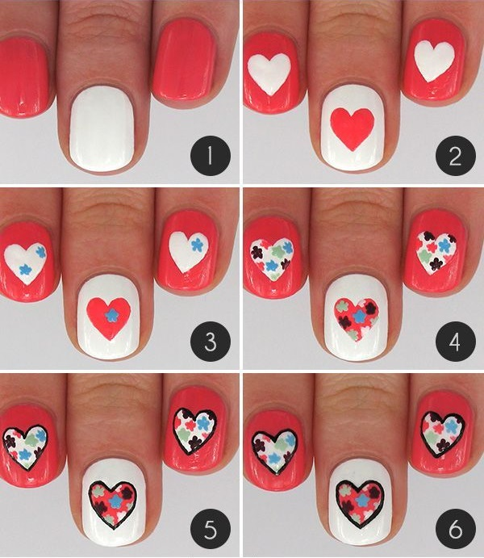

Paso 1:Aplicamos una capa delgada de esmalte de diferentes colores en cada una de nuestras uñas.
Paso 2:En cada uña dibujamos un corazón de diferente color al fondo.
Paso 3:Contorneamos cada corazón de una color de esmalte diferente al fondo y al corazón.
Paso 4:La forma de contornear no es lisa sino en estilo de zigzag como se ve en la imagen.
Paso 5:Ahora con el mismo color del contorno dibujamos un corazón muy pequeño en el centro.
Paso 6:Dejamos secar y aplicamos esmalte transparente para dar brillo.

Paso 1:Aplicamos una capa delgada de esmalte en cada uña (puedes intercalar colores)
Paso 2:Ahora centro de nuestra uña dibujamos un corazón grande de un color diferente.
Paso 3:Con colores diferentes al corazón dibujamos pequeñas estrellitas.
Paso 4:El corazón tendrá que estar lleno de estrellitas como se muestra.
Paso 5:Contorneamos con esmalte color negro el corazón.
Paso 6:Dejamos secar y aplicamos brillo con esmalte transparente.
Paso 1:Pintamos con esmalte color azul nuestra uña.
Paso 2:Ahora con esmalte negro dibujamos un corazón en una esquina inferior de la uña como se muestra en la imagen.
Paso 3:Dejamos secar un poco y después con esmalte rosa hacemos un corazón un poco más chico tratando de dejar un contorno del corazón negro.
Paso 4:Por ultimo dibujamos unos puntitos pequeños en un lado del corazón.
Paso 1:Aplicamos una capa delgada de esmalte del color de tu elección.
Paso 2:Intercalando las uñas dibujamos en algunas un corazón en el centro de algún otro color.
Paso 3:Antes de que este seque con un pincel de punta comenzamos a quitar el centro.
Paso 4:Dejaremos solo un pequeño contorno como se ve en la imagen.
Paso 5:Podemos decora las otras uñas con algunas decoraciones a tu elección.
Paso 6:Para finalizar aplicamos esmalte transparente para dar brillo.
Paso 1:Pintamos nuestras uñas de un color de esmalte color rojo.
Paso 2:Ahora con esmalte blanco dibujamos dos líneas que se topan en la parte inferior dejándolas separadas en la parte superior como vemos en la imagen.
Paso 3:Enseguida juntamos las líneas que dejamos abiertas tratando de formar un corazón.
Paso 4:Dejamos secar un poco el corazón después de rellenarlo.
Paso 5:Por ultimo en el punto donde en un principio se juntaron las líneas prolongamos una línea hacia la parte inferior de la uña.
Paso 1:Pintamos nuestra una con una capa de esmalte cualquier color.
Paso 2:Con otro color en la parte superior de la uñas trazamos dos líneas que se junten en su parte inferior dejando separado lo de la parte superior como se ve en la imagen.
Paso 3:Lo mismo hacemos en la parte inferior de nuestra uña.
Paso 4:Tomando en cuenta que estas líneas estarán más separadas.
Paso 5:Ahora en un lado de nuestra uña con una línea juntamos los últimos puntos de las líneas ya trazadas es decir donde se terminó la línea.
Paso 6:Lo mismo hacemos con el otro lado de la uña de forma que al final quede un corazón.
Paso 7:Ahora comenzamos a rellenar las partes de afuera del corazón formado con el mismo color que lo dibujamos (negro)
Paso 8:Por ultimo aplicamos una capa de esmalte para dar brillo.